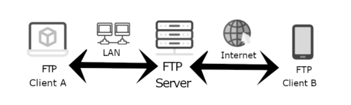

您好~我是小鱷助理
歡迎進入鐵支核心工廠！小鱷見你相貌堂堂，頗有大將之勢，今天就來指點你一二！！！ 這裡是網路事業群之之之技術中心下下下的工程部。 老實說！第一天通常都沒什麼事情，所以請您先自行打掃自己的環境，如果好了請測試開機沒問題後，電話直播2721 找工程小秘書-小薰
歡迎進入鐵支核心工廠！小鱷見你相貌堂堂，頗有大將之勢，今天就來指點你一二！！！ 這裡是網路事業群之之之技術中心下下下的工程部。 老實說！第一天通常都沒什麼事情，所以請您先自行打掃自己的環境，如果好了請測試開機沒問題後，電話直播2721 找工程小秘書-小薰
請拿出紙筆記住你腳下的位址：192.168._____._____(螢幕右下角有個VNC可以查看)，螢幕型號M_________(請參照您螢幕後方貼紙)待會我們要開始填寫戶口名冊。
【戶口申報】填畢。請等待戶政事務所(MIS)設定完成。
(等待過程您電話會響起，敢漏接你就死定了!!!)
走起(.verb) 跟老大拜碼頭、並加入幫口的社群：


(特種) 字第NO:20211109號
| 姓 名： | 鐵老么 | 病 號： | C8763 |
| 說 明： | 到院前死亡(以下空白) |
醫生囑咐： |
|

(特種) 字第NO:20211109-2號
| 姓 名： | 鐵老么 | 病 號： | C8763 |
| 說 明： | 略(以下空白) |
自費申明： |
工程部每個月有一筆ＢＵＧ獎金，我們領多少錢，就要給多少發票出去。 但我們不一定每個月都會有這麼多的支出，不足的部分，就看大家誰可以給發票來補，所以我們的下午茶就是拿獎金來當部門福利。（獎金也不一定每個月會有，也有可能某一天會消失，現在有穩定給的就是ＢＵＧ獎金） 兌換金用途： 助理每次下午茶會宣布一個上限金額，如果您超額點餐，就可以拿兌換金來折抵超額部分。 兌換金方法： 一、 捐發票（發票的項目範疇不限，只要是開１６７７６３８７皆可） 二、 再你的薪資單多一個虛擬獎金，但你級距會被調高。＊參考說明 兌換金換算： １０００元*０.０５=５０、即５０元就是兌換金，以此類推。 (兩種兌換金換算皆一樣) 說明： |
1.修改(沒特別註明 都是修改)
2.新增(圖片檔)
需求單:
企劃某A檔案要從測試機(192.168.1.234 )上傳至
正式機(192.168.8.101
)or(192.168.8.102 )

STEP1:
本機建立一個資料夾名為20211014 和子資料夾 backup
STEP2:
收尋企劃給的測試機路徑找到A檔案，將測試機A檔案丟進本機待傳
STEP3:
開啟正式機找到A檔案並 "備份" 到本機的子資料夾backup內
STEP4:
再把本機待傳的A檔案覆蓋至正式機A檔案即完成
這是一個機房重地，若您聽到o~oh~o~oh的聲音請別害怕!這只是因為臭蟲太多!
若您看到一個黑影跑過去，請你害怕!不要問!你以後就知道了!!
在這裡你需要KEEP保持運動，否則...我真不敢想像呢?